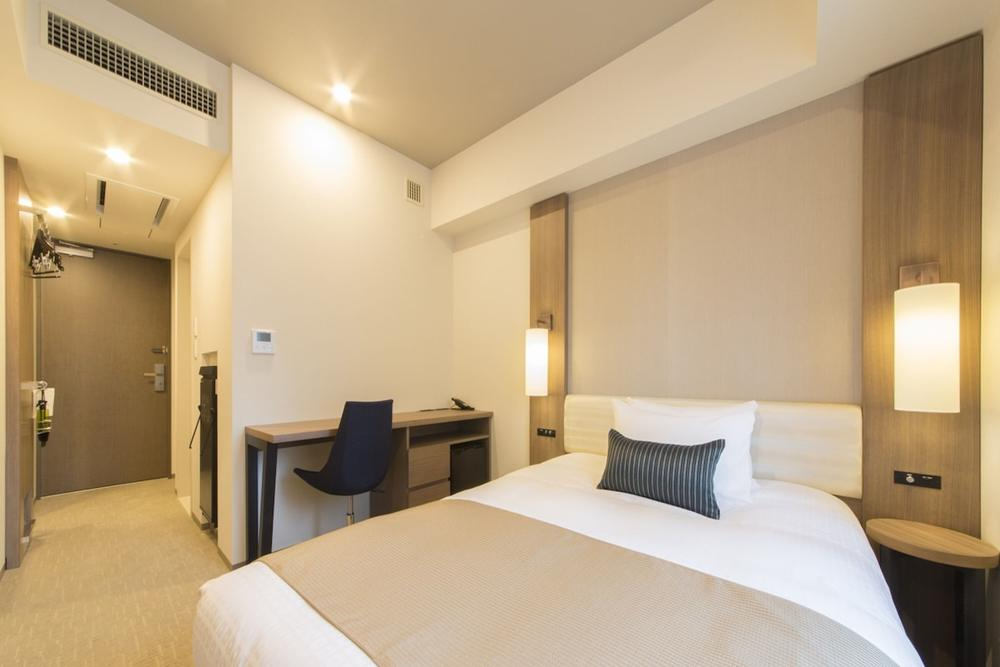
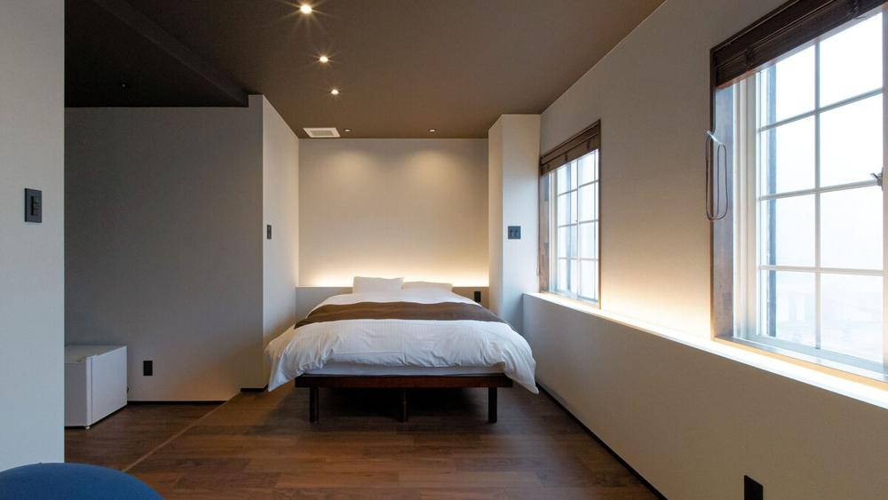
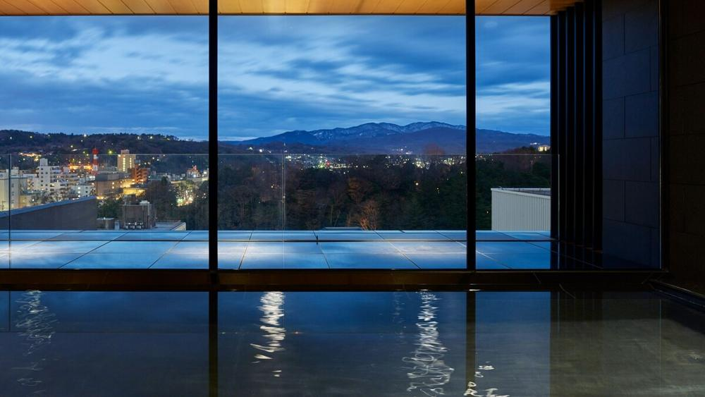
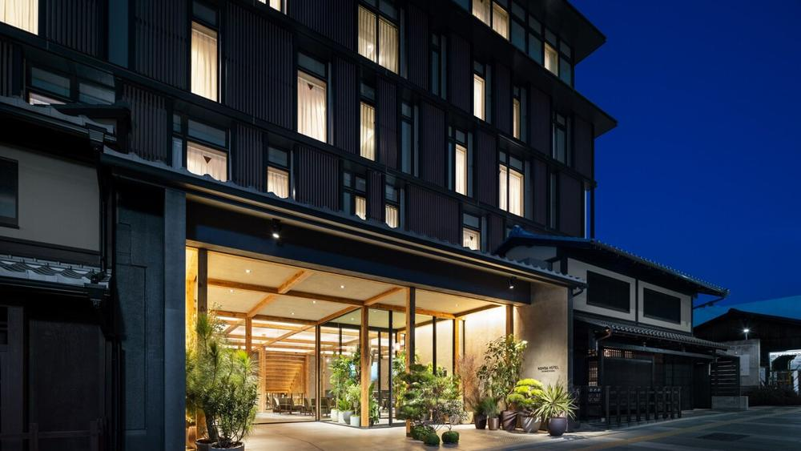
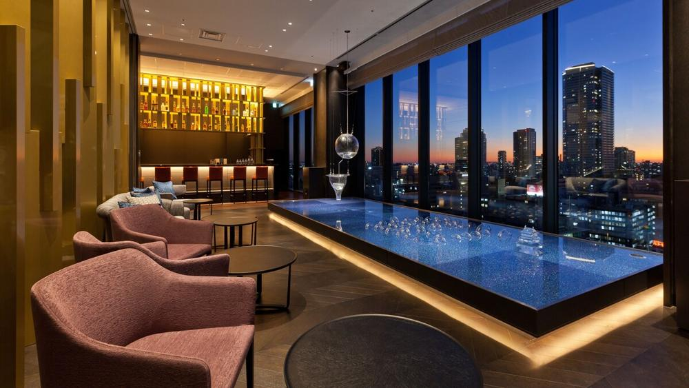
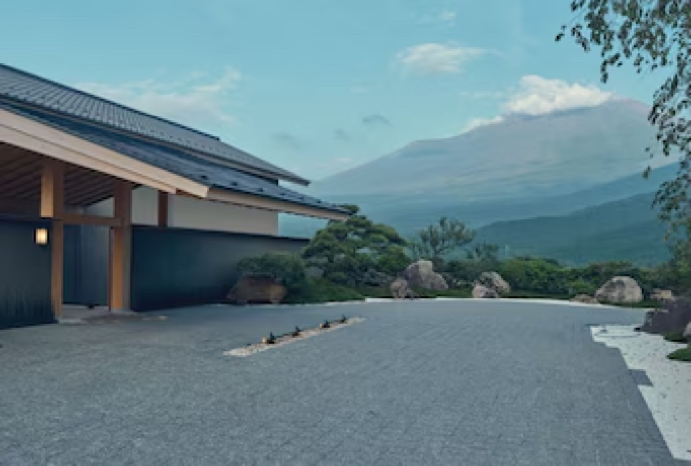
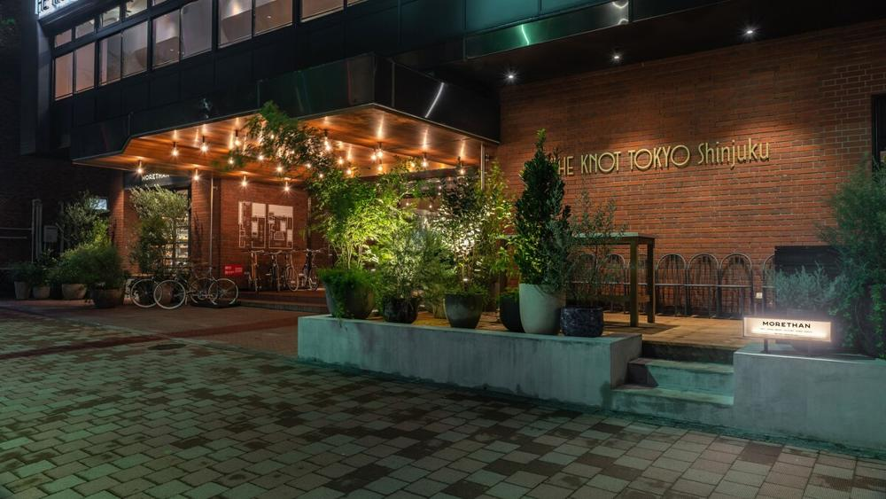

Onde vocês vão dormir
Um hotel por parada, do jeito que vocês escolheram.
Aqui estão as paradas na ordem da viagem, com o quarto de cada hotel. Os valores são pro casal, em reais, com impostos. O café da manhã está incluído em Myoko e no Gora Kadan Fuji (que também inclui o jantar), e nos outros hotéis vocês decidem lá, no hotel ou na rua. Os hotéis podem ser pagos à Aflora em até 12x sem juros no cartão de crédito. Cada quarto mostra até quando dá pra cancelar sem custo. Tudo sujeito à disponibilidade até a reserva.

Vocês chegam às 17h20 depois de um voo longo, e esse hotel resolve a primeira noite sem esforço. Fica em Ginza, a 1 minuto a pé do teatro Kabuki-za e perto de duas estações de metrô, com recepção 24 horas e lavanderia. O quarto é compacto, mas pra duas noites de chegada e descanso funciona muito bem.
| Quarto | Total, 2 noites |
|---|---|
| Superior, cama Queen18 m², não reembolsável | R$ 1.831 |
Essa tarifa não é reembolsável. Existe a versão com reembolso total até 13 de fevereiro, que custa cerca de R$ 290 a mais. Esse hotel serve café da manhã, mas ele não vem na tarifa: vocês pagam no local, e o valor eu confirmo com o hotel.

Foto de um dos quartos do hotel. O estilo varia entre as categorias.
Um hotel de gestão familiar no meio da vila de Akakura Onsen, a 6 minutos a pé dos lifts do Akakura Onsen e do Akakan. Tem onsen no hotel, café da manhã buffet incluído e guarda de equipamento de esqui. Os restaurantes e bares da vila ficam a pé, com um café e um restaurante a uns 350 m, então dá pra jantar fora ou no próprio hotel, que também vende planos com jantar. O Alexandre sai pra pista a pé, e a Carol fica com o onsen e a vila por perto.
O hotel se chamava Akakura Park Hotel e mudou de nome em outubro de 2024, quando reabriu com quartos reformados. Com o nome antigo, ele tem nota 4,0 no Google (94 avaliações) e no Tripadvisor (29 avaliações), com elogios à equipe, ao café da manhã e ao onsen. Já mandei um e-mail ao hotel com as dúvidas que sobraram.
| Quarto | Total, 5 noites, com café da manhã |
|---|---|
| Duplo luxo55 m², vista da montanha, reembolsável até 15 de fevereiro | R$ 11.736 |
Esse é o último quarto dessa categoria nas datas de vocês, e eu já segurei ele pra vocês. O jantar não está incluído: vocês jantam no restaurante do hotel ou na vila. Já pedi ao hotel um quarto silencioso, longe da entrada, e confirmo com eles os últimos detalhes.

A Carol falou em mercado de peixe de manhã, e esse hotel fica a 3 minutos a pé do mercado Omicho. O santuário Oyama está a 5 minutos e o castelo a 10. No 13º andar tem um banho público panorâmico com vista da cidade e do parque do castelo. Nota 9,4 em mais de mil avaliações, e pra duas noites a localização resolve quase tudo a pé.
| Quarto | Total, 2 noites, sem café |
|---|---|
| Superior, cama King27 m², não reembolsável | R$ 1.548 |
Essa tarifa não é reembolsável. Existe a versão com reembolso total até 2 de março, que custa cerca de R$ 395 a mais. O café da manhã vocês decidem lá, no hotel ou na rua.

Fica em Higashiyama, a 10 minutos a pé do templo Kiyomizu-dera e a 13 do santuário Yasaka, com nota 9,8 em mais de 2 mil avaliações. Tem arte contemporânea nos corredores, bicicletas pra pedalar pelas ruelas e um bar com vista da cidade. Vocês acordam dentro do bairro histórico, e é isso que faz Kyoto valer a pena.
| Quarto | Total, 5 noites, sem café |
|---|---|
| Casal econômico, cama Queen19 m², no térreo, reembolsável até 6 de março | R$ 4.765 |
O hotel não tem elevador, então o quarto no térreo ajuda com as malas, e a gente combina o envio delas entre as cidades.

Osaka é a cidade de comer, e esse hotel fica a cerca de 8 minutos a pé da Shinsaibashi-suji e da Amerikamura, com Dotonbori logo ali. Tem um bar no 16º andar com vista da cidade e um restaurante no 17º. Dormir a pé de tudo pesa mais aqui do que em qualquer outra parada, e o Koyasan fica pra um bate e volta.
| Quarto | Total, 3 noites, sem café |
|---|---|
| Superior, cama Queenvista da cidade, reembolsável até 12 de março | R$ 2.334 |

Essa é a noite de ryokan da viagem, e do pedido de vocês: Fuji entre Osaka e Tóquio. O Gora Kadan Fuji fica em Subashiri, na base do Monte Fuji, e é um ryokan novo, de 2025, com onsen, piscina e jantar kaiseki servido no quarto. O hotel é de frente pro Fuji, mas se ele vai aparecer depende do tempo, então a gente não conta com isso como garantido.
| Quarto | Total da noite, com jantar e café da manhã |
|---|---|
| Standard Suite com banho de madeira, cama Kingreembolsável até 14 de fevereiro | R$ 7.202 |
Jantar, chegada e transfer
A tarifa é de meia-pensão: inclui o jantar kaiseki e o café da manhã, servidos no quarto, e dá pra escolher café japonês ou ocidental. O check-in é das 15h às 19h, e o jantar começa até as 19h. Quem chega depois recebe uma marmita no lugar. Do trem, o hotel tem transfer grátis saindo da estação de Gotemba (uns 25 minutos), ou táxi com valor fixo de JPY 16.000 saindo de Mishima (uns 40 minutos). Eu combino o horário com o hotel, que pede aviso com 72 horas de antecedência.
Quem quiser variar o jantar pode trocar por kappo no balcão, sushi ou teppanyaki, por JPY 12.100 a JPY 15.800 por pessoa, pagos no hotel. O hotel também pede o formulário de alergias e restrições alimentares até 3 dias antes da chegada, e eu envio por vocês.
O valor da página é o pago na reserva. O imposto local de JPY 150 por pessoa (JPY 300 pro casal) é pago no hotel, em ienes. Esse é o Gora Kadan Fuji, de Shizuoka, e não o Gora Kadan de Hakone.

Fica em Nishi-Shinjuku, a 1 minuto do parque central e a 3 do prédio do governo metropolitano. O lounge tem galeria de arte, o restaurante é italiano e o hotel promove eventos locais, então é um fechamento com mais assunto do que o primeiro hotel de Tóquio. Os quartos são pequenos, mas a localização compensa.
| Quarto | Total, 4 noites, sem café |
|---|---|
| Superior, cama de casal16 m², limpeza do quarto a cada 3 dias, reembolsável até 15 de março | R$ 4.696 |
O voo sai às 22h20 do dia 21, depois do check-out das 11h. A gente combina guarda de malas ou um late check-out pra o último dia ficar leve.
O resumo da hospedagem
| Parada | Quarto | Café da manhã | Cancelamento grátis | Total |
|---|---|---|---|---|
| Tóquio, 2 noites | Tokyu Stay Ginza, Superior Queen | vocês decidem lá | não reembolsável | R$ 1.831 |
| Myoko, 5 noites | Yunoyado Mochizuki, Duplo luxo | incluído | até 15/02 | R$ 11.736 |
| Kanazawa, 2 noites | Mitsui Garden, Superior King | vocês decidem lá | não reembolsável | R$ 1.548 |
| Kyoto, 5 noites | Nohga, Casal econômico, térreo | vocês decidem lá | até 06/03 | R$ 4.765 |
| Osaka, 3 noites | Osaka Excel Tokyu, Superior Queen | vocês decidem lá | até 12/03 | R$ 2.334 |
| Fuji, 1 noite | Gora Kadan Fuji, Standard Suite com banho de madeira | incluído, com jantar | até 14/02 | R$ 7.202 |
| Tóquio, 4 noites | THE KNOT, Superior | vocês decidem lá | até 15/03 | R$ 4.696 |
| Total dos 7 hotéis | R$ 34.112 | |||
Tokyu e Mitsui. As tarifas escolhidas não são reembolsáveis, e por isso são as mais baratas. Se vocês preferirem poder cancelar, existe a versão reembolsável: cerca de R$ 290 a mais no Tokyu (até 13 de fevereiro) e cerca de R$ 395 a mais no Mitsui (até 2 de março).
Café da manhã. Está incluído em Myoko e no Gora Kadan Fuji, que também inclui o jantar. Nos outros hotéis vocês decidem lá, direto no hotel ou em padarias e cafés.
Forma de pagamento. Todos os hotéis podem ser pagos à Aflora em até 12x sem juros no cartão de crédito.
Valores conforme as reservas, atualizados em 9 de novembro de 2026, com impostos. Passagens, transfers, passeios e o fee da Aflora ficam fora desses números.
O que a gente fecha com vocês
- Os sete hotéis já estão reservados. Se vocês quiserem trocar algum quarto, dá pra cancelar sem custo até as datas da tabela, menos no Tokyu e no Mitsui.
- As restrições alimentares de vocês, que o Gora Kadan Fuji pede até 3 dias antes da chegada.
- Se querem a tarifa reembolsável no Tokyu e no Mitsui, por um pouco mais.
- O aluguel de snowboard e o passe de lift do Alexandre: eu levanto as opções na vila, e preciso da altura e do tamanho de bota dele.
- Se vale uma aula de snowboard no primeiro dia ou uma saída guiada fora da pista.